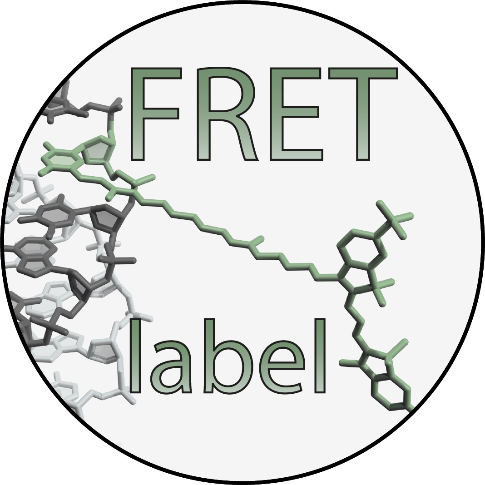

Software
We have developed a series of open-source software packages for analysis and prediction of single-molecule experiments aiming to integrate FRET with molecular simulations.
MASH-FRET
MASH-FRET analyzes experimental and synthetic single-molecule microscopy videos with automated molecule sorting. It implements the entire workflow of image-based, single-molecule data analysis including trace processing, histogram building and bootstrapping.
FRETraj
 By calculating multiple fluorophore accessible-contact volumes (ACV) along a molecular dynamics trajectory, FRETraj predicts transfer efficiency distributions that help to interpret single-molecule experiments.
By calculating multiple fluorophore accessible-contact volumes (ACV) along a molecular dynamics trajectory, FRETraj predicts transfer efficiency distributions that help to interpret single-molecule experiments.
FRETlabel
 FRETlabel couples fluorescent dyes to your nucleic acid of interest using common chemical conjugation chemistries.
Lifefit

Lifefit uses iterative reconvolution fitting to analyze fluorescent lifetime and dynamic anisotropy decays.